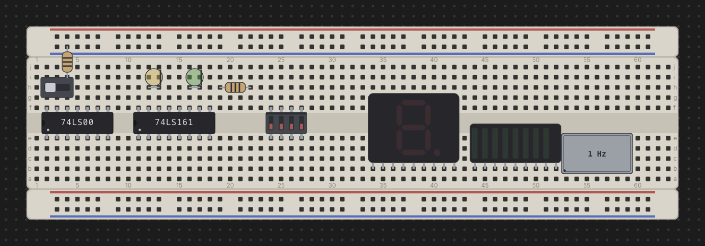

Chips & Components
Everything that isn't a breadboard strip lives in the Parts palette on the left: 74LS and CD4000 logic chips, CPUs, 65xx interface chips, memory chips, switches, LEDs, displays, resistors, capacitors, inductors, diodes, transistors, oscillators, the 555 timer, and power/clock bricks. This page covers finding a part, seating it on a board, and the (surprisingly varied) ways different parts rotate and flip once they're down.

The parts palette
The palette opens with every section collapsed, grouped by function:
- BOARDS — the breadboard kits and loose strips, pinned at the top (see The Desk & Breadboards).
- CHIPS — the logic chips, folder-grouped by function, ending with the Timer group (the 555 timer), the Interface group (the 65xx PIA/VIA) and the PROCESSOR group (the W65C02 and Z80A CPUs). Which logic family it shows — 74LS, CD4000, or both, each in a folder of its own — is Settings → Data Sheets → Chip family (see Choosing a logic family). The 555 belongs to neither family, so it shows in every mode; showing CD4000 alone, it shares the Timer group with the CD4000 timers.
- COMPONENTS — Switches, Resistors, Capacitors, Inductors, Diodes, Transistors, LEDs, Displays, Oscillators, and Power, in that shelf order. Capacitors, Inductors, Diodes and Transistors carry a red (i) beside their names: in the digital engine these parts do only part of what the real ones do, and are there for the export and a complete design (see Inductors, diodes and transistors). With Spice Lite on they are simulated for real, and the (i) goes.
- Memory — the ROM/RAM chips, pulled out of CHIPS into a top-level group of their own.
- ANNOTATIONS — labels and notes (see Probing & Net Names).
- SIGNALS — bench stimulus buttons, pinned at the bottom (see External signals).
With the tray shut, the strip it leaves on the desk's edge carries one icon per section in the same order — click one to open the tray on that section alone. To keep the tray down to one section all the time, turn on Auto-close tray folders in Settings: opening any folder then closes the rest.
The tray's right edge is a drag handle: pull it out to give long part names more room, and the width you leave it at is remembered.
Type in the Filter parts… box to search by id, title, or description —
matching, it forces every group open so results aren't hidden behind a
collapsed folder. Click any entry to arm placement — a ghost of the part
follows your pointer until you click it down on a board, or press Esc to
cancel.
Placing a DIP chip
A DIP chip always straddles the trench: half its pins seat in row e, the other half in row f, running the standard counterclockwise DIP numbering — pin 1 at the anchor hole in row e, pins continuing left to right along e, then wrapping back right to left along f. The notch end of the chip (or the dot beside pin 1) marks pin 1 and always faces left. Move the ghost over a pin-board and it snaps to the nearest legal seat; it turns red if the seat is already occupied or falls off the edge of the board.
The wide chips — the 24-, 28-, 32- and 40-pin packages: the memories, the 6502 and its peripherals, the Z80 and the 74LS181 — are 0.6 inch across, twice a small chip, and seat at that true width: pin 1 in row d, the other row of pins in row h, six holes apart. The chip's body covers rows e, f and g between them, so those holes can't take a wire or another part's lead — wire to each pin from the rows outside it instead (a–c below, i–j above). A desk saved before wide chips seated this way keeps them in rows e and f just as they were; move one on its own and it takes its true width, bringing the wires you carry with Option out from under its body.
Because a chip's footprint is the same two rows no matter how it's turned, placing one is a matter of picking the column — there's no click-to-rotate step while placing a chip the way there is for a rail or a resistor; instead, rotation happens afterward (see below).
Placing a discrete
Most discretes — slide switches, push buttons, toggle buttons, LEDs (in
their default horizontal form), single-digit 7/8-segment displays, and LED
bars (bar8) — are linear: they seat along a run of adjacent holes in any
single grid row (any of a–j), not just rows e/f. Drop one anywhere its
footprint fits and every free hole underneath it is available.
A few parts don't fit that linear model:
- bar8iso — the isolated 8-segment LED bar — is packaged as a 16-pin DIP, so it straddles the trench exactly like a chip: anodes A1–A8 in row e, cathodes K1–K8 in row f.
- DIP switch banks (sw-dip1, sw-dip2, sw-dip4, sw-dip8) are likewise DIP-packaged (2/4/8/16 pins for 1/2/4/8 switch positions), straddling the trench the same way: each position's two facing pins — one in row e, one in row f — are its own independent SPST switch.
- Oscillator cans (osc-full, osc-half) are rigid four-cornered shapes rather than a line of pins — a full can is 7 holes by 4, a half can 4 holes square, with legs only at the four corners. A can can seat anywhere on the grid, including straddling the trench, since its shape (not a row) determines its footprint.
- Character LCD modules (lcd16x2, lcd20x4) are linear — a 16-way header along 16 adjacent holes in one row — but the module itself is much bigger than that row. See below.
Component values
A resistor has a Resistance, a capacitor a Capacitance, an
inductor an Inductance, a Zener diode a Zener voltage and a
transistor a Part number. Right-click the part, choose
Properties…, and either pick from the field's list — the ▾ beside it, or
↓ — or type any value at all, the way it is printed on a parts drawer or a
schematic. Typing narrows the list to the entries holding what you have typed
(4 leaves 47Ω, 470Ω, 4.7kΩ, 47kΩ and 470kΩ; u finds µ).
| Typed | Reads as |
|---|---|
470, 470R, 470Ω, 470 ohms |
470Ω |
4.7k, 4k7, 4.7 k, 4.7 kilo ohms |
4.7kΩ |
1M, 1meg, 2M2 |
1MΩ, 2.2MΩ |
2R2, 0.47 |
2.2Ω, 0.47Ω |
100n, 100nF, 0.1uF, 0.1µF |
100nF |
4n7, 10 microfarads |
4.7nF, 10µF |
10uH, 1 millihenry |
10µH, 1mH |
5.1, 5.1V, 5V1 |
5.1V |
A plain number is in the field's own unit — ohms, farads, henries or volts —
so 100 in a Capacitance is a hundred farads, which is out of range and says
so. The prefixes are p n u/µ m k M G, or spelled out (pico
… giga, and meg as SPICE writes it). A lowercase m is always milli and
an uppercase M always mega: 1m on a resistor is a milliohm, refused as out
of range rather than guessed at. A prefix letter — or R for ohms, V for
volts — can stand in for the decimal point (4k7, 2R2, 4n7, 5V1). A
unit belonging to something else is refused by name: 10uF in a Resistance
is "a capacitance, not a resistance".
Press Enter or move out of the field to apply it. A value that reads is shown
back in its tidy form — 100 kilo ohms becomes 100kΩ — to three figures,
or to as many as you typed (4753 is 4.753kΩ; nothing is rounded away). One
that doesn't stays as you typed it, in red with the reason under it ("Not a
resistance value", "Out of range: 0.1Ω to 100MΩ"), and the part keeps the
value it had. Any value in range is taken, on the list or not.
| Field | Range | List |
|---|---|---|
| Resistance | 0.1Ω – 100MΩ | the E12 series, 10Ω – 1MΩ |
| Capacitance (ceramic) | 1pF – 100µF | 10pF – 1µF |
| Capacitance (electrolytic) | 100nF – 100mF | 1µF – 1mF |
| Inductance | 1nH – 10H | 1µH – 680µH and 1mH – 100mH, in E6 steps |
| Zener voltage | 1.8V – 200V | 2.4V – 30V, each with its part |
When the value a part holds is not a standard one — one it is actually
made in — a small amber ⓘ appears to the right of the field. Click it
for the standard values either side (3k offers 2.7kΩ and 3.3kΩ;
a value past the end of the series, the one end it is past), and click one
to take it. It is advice, never a fault: a value that is not standard is
still taken exactly as typed, and a click anywhere else, or Escape, puts the
card away. Resistors and capacitors are measured against the E12 series
across their whole range (so 4.7n is standard though the list does not
offer it), a potentiometer against the track values pots are sold in, and an
inductor or a Zener against its own list.
A Zener's list pairs each voltage with its part — 5.1V (1N4733A) — and
picking one sets both. Typing a voltage on the list (5.1, 5V1) brings its
part number with it, typing a part number on it (1n4742) picks its entry,
and any other voltage stands alone, with no part number.
A capacitor's Type (Ceramic or Electrolytic) and a transistor's Type
(NPN, PNP, N- or P-channel MOSFET) swap the part where it stands and reopen
its card as the new one; like any change to the wiring, the Type is greyed
while the circuit runs. The value comes across untouched, so a capacitance
outside the new type's range shows red rather than being changed. A
transistor's list holds the parts of its own type, and a part number from
another type's list is cleared by the swap (one you typed yourself is kept).
Typing another type's part number is allowed, with a warning — 2N3906 is a PNP transistor.
An older project's values load as they were. One that cannot be read is kept exactly as written, and shows red when you open the card.
On the desk a resistor wears its colour code — four bands for a value two
figures say (4.7k: yellow, violet, red, gold), five for one that needs three
(4.99k) — and a capacitor has its value printed on it. Both values appear in
the Schematic View, the BOM, and the
KiCad export.
A resistor's value changes nothing in the simulation: a resistor is a weak pull whatever it measures, and a lamp is lit or burnt by whether one is in the loop. Only the timing chips read it (below).
Potentiometers
COMPONENTS ▸ Resistors ▸ Potentiometer is a three-pin trimmer: a resistive track between the two outer pins and a wiper on the middle pin that taps it. It seats along one row like a switch, pins 1, W and 3 in three holes side by side.
Its Properties… card has the track's Resistance — picked from the values pots are sold in (100 Ω, 200 Ω, 500 Ω, 1 kΩ … 22 kΩ, 25 kΩ, 47 kΩ, 50 kΩ … 1 MΩ, 2 MΩ) or typed like any resistor's — and the wiper's Position, a slider from 0 % to 100 %. The resistance from the wiper to pin 1 is Position × Resistance, and to pin 3 is what is left of the track:
| Position | Wiper ↔ pin 1 | Wiper ↔ pin 3 |
|---|---|---|
| 0 % | 0 — a wire | 100k |
| 10 % | 10k | 90k |
| 50 % | 50k | 50k |
| 90 % | 90k | 10k |
| 100 % | 100k | 0 — a wire |
(for a 100k part). The slider shows exactly that as you move it — the
resistance to pin 1 at its left end and to pin 3 at its right, 15k ━●━━━ 85k
— and changing the Resistance updates both. It applies as you drag it, while the
circuit runs as well, and the brass screw on the part turns to show where the
wiper is.
Each side with track left behaves exactly like a resistor: a weak pull, and a value the timing chips read — a pot as a 555's RB tunes its rate. A side with none left is the wiper resting on that pin: a plain wire, so the two nets join, and an LED fed through it with nothing else in the loop burns.
Capacitors
COMPONENTS ▸ Capacitors holds two:
- Capacitor (ceramic) — a disc, not polarised, leads one hole apart.
- Capacitor (electrolytic) — a can with a stripe down its negative
side, leads one hole apart. Pin 1 is
+, pin 2 is−.
Both place, rotate and bend exactly like a resistor (see Rotating & flipping), and they take holes the way any part does, so a wire or a pin can't share one.
A capacitor carries a value, not charge. It does not filter, smooth, decouple or store anything, and it connects nothing: the simulation treats it as open, even when its legs sit across the two rails. What it is for is the timing chips — the 555, the CD4047B, the CD4060B, the CD4098B and the CD4538B read the capacitor (and the resistors) wired to their timing pins and run at the rate the datasheet gives for those values; see Timers. A capacitor still counts as connected when the checks ask whether a net has anything on it.
A reversed electrolytic makes no difference to the simulation. Watch the stripe anyway if you mean to build it.
The first time you place a capacitor a note says all this; Don't show again puts it away for good.
Inductors, diodes and transistors
On the standard engine these parts do as much as a logic simulator can
honestly do, and no more: no forward drop, no gain, no thresholds, no Zener
breakdown, no inductive kick. Spice Lite
simulates all of those. What they always do is export to KiCad as the real part (see
Exporting). Every one of them — and the capacitors —
has an optional Part number in Properties… (1N4148, 2N2222,
2N7000…). It is printed on the part, listed in the
BOM and written to the export, and it changes nothing about
how the part behaves.
Inductors (COMPONENTS ▸ Inductors) take an optional Inductance (see Component values); leave it blank for a bare inductor. Its Style is the part it is, seen from above like everything on the desk: a Coil — a toroid standing on edge over its leads, copper wound round a dark ferrite ring — or a Can, a drum in a black sleeve, its value printed on top. Holes between leads is 1 (leads 0.2 in apart, the smallest part), 2 (0.3 in, the default) or 3 (0.4 in, the biggest). On a part lying along a row it moves the second lead, so a size whose lead would land on a taken hole, or off the end of the board, is refused — with the reason under the choice — and the choice is greyed while the circuit runs, like any other change to the wiring. On the standard engine an inductor conducts like a wire: its two leads are one net, whatever it looks like. So one across the rails is a short, exactly as a wire would be. Under Spice Lite one with an Inductance is a real inductor, and its card gains a Winding choice.
Diodes (COMPONENTS ▸ Diodes) are the Diode and the Zener diode. Pin 1 is the anode; pin 2, the cathode, is the end the band marks. A diode is one-way: a HIGH on its anode passes to its cathode, and nothing ever passes back. A LOW or undriven anode leaves the cathode to whatever else is on it — so two diodes into one net, with a pull-down resistor there, make a diode-OR. The HIGH passes at the strength it arrived with: from a rail or a chip output it drives the cathode, through a resistor it only pulls it. Like an LED, a diode wired forward straight across two strongly driven nets (rail to rail, or an output into ground) burns. A Zener takes an optional Zener voltage, picked with its part number or typed (see Component values), printed and exported, but in the simulation it is exactly a diode: reverse breakdown is analog, so it regulates nothing here.
Transistors (COMPONENTS ▸ Transistors) are an NPN and a PNP
bipolar transistor and an N-channel and a P-channel MOSFET, each
standing over three holes in a row with its pin letters printed on it: E B C
for the BJTs, S G D for the MOSFETs. A BJT is a TO-92 unless you pick
TO-220 (a TIP120 or a TIP31C) under Package in its Properties…; a
MOSFET is a TO-220 — the power part, its metal tab behind it — unless you
pick TO-92. The package is how it is drawn, listed in the BOM and
exported; on the standard engine it is never how it behaves (under
Spice Lite it picks the default
Grade). Its Type turns it into any of the four where it stands.
Picking a part number from the list sets its package (and, under Spice Lite,
its grade) to match. Real pinouts differ by part number
(a 2N2222 is E·B·C, a BC547 C·B·E, an IRLZ44N G·D·S), so select one and press
R to turn it end-for-end. In the simulation each is a switch:
| Part | Control | Joins | On while the control is |
|---|---|---|---|
| NPN | Base B |
Collector C and emitter E |
HIGH |
| PNP | Base B |
Emitter E and collector C |
LOW |
| N-channel MOSFET | Gate G |
Drain D and source S |
HIGH |
| P-channel MOSFET | Gate G |
Source S and drain D |
LOW |
When it is on, the two switched pins are joined as a closed switch joins them; when it is off, they are apart. What an undriven or undefined control does is where the two kinds differ, as they do on a bench:
- A BJT follows its base and remembers nothing: with its base floating or undefined it is off.
- A MOSFET's gate holds charge: it stays in the last state its gate was driven to — off until the gate has been driven at all. So a gate left floating (or driven by a floating CMOS output) keeps the MOSFET on or off rather than passing the confusion down the channel. While it runs on that held charge, the lamp on its face is ringed in amber, its hover says so, and its Properties… card warns you: a real gate leaks that charge away, so tie it to a defined level with a resistor.
While the circuit runs, a transistor's lamp lights while it conducts. Put a resistor in an LED's leg as you would on a bench — with none, the LED burns — and a transistor switched on straight across the rails is a short.
A pin wired only to one of these parts counts as connected, conducting or not: a reversed diode or an off transistor is a valid board, not a floating input. Supplies don't pass through them, though — a chip powered through a diode or a transistor sees no supply and stays unpowered.
Character LCD modules
The Displays group holds two HD44780 character-LCD modules: a 16×2 (the standard 1602A) and a 20×4 (the 2004A). They're drawn to their real sizes — 80 × 36 mm and 98 × 60 mm of PCB — and their screens are live: run the circuit, drive the module, and the characters appear on the glass.
Both plug in through a 16-way header along one row, and the pin
assignment is identical between them, so what you learn wiring one applies
to the other. The header runs along the module's top edge, which means
the body hangs below the row it plugs into — so seat one on a bottom
row (a) and it clears the board it's plugged into rather than covering
it. The placement ghost shows you the whole module, so you can see this
before you click.
Driving one is the ordinary HD44780 parallel bus: put a command or character
code on DB0–DB7, set RS (0 = instruction, 1 = data) and R/W
(0 = write), and pulse E — the byte latches on E's falling edge. Wire
VDD/VSS to a 5 V rail. V0 (contrast) and A/K (backlight) are
cosmetic in the standard engine; under Spice Lite
the backlight is an LED and V0 sets the contrast. During a read the
module drives DB0–DB7 itself, so tri-state anything else sharing that
bus.
Both modules show the same controller datasheet in their pin-assignments
window — it's one document, because RS/R/W/E, the bus and the address
maps are the controller's and are identical across the two sizes.
Rotating & flipping
Rotation behavior is not one rule for every part — it depends on what kind of part it is. This is the part worth reading carefully.
Chips (R, mid-drag or while selected). A DIP chip's footprint maps
onto itself when flipped — same two rows, same columns — so flipping only
reverses which physical pin sits where; the chip never has to move. Select a
placed chip and press R to flip it 180° in place, or press R while
mid-drag to flip it before you drop it. Either way its pin-assignments
window updates to show the new numbering.
bar8iso and DIP switch banks (R while selected). The isolated LED bar
and every DIP switch bank are DIP-packaged, so they flip exactly like a
chip: R turns the part 180° in place, the same holes, only the pin
numbering per position reverses (a switch bank's own position states don't
move — position 1 is still position 1, just wired to the opposite pins now).
Neither has the turn-in-hand behavior of a plain LED — treat them as chips
for rotation purposes.
Resistor, capacitor, inductor, diode and LED (R, both while placing and once placed). These
two-lead parts start in a horizontal footprint form (pin 1 and pin 2 a
fixed span apart along one row). Press R while the ghost is armed to turn
it into a vertical two-free-ends form instead: pin 1 stays at the anchor
hole, and pin 2 becomes a free lead that can land on any other free hole —
including a hole on a different strip entirely, such as reaching up to a
power rail. Each R press while placing steps the ghost a further quarter
turn, cycling through all four compass directions before repeating. Once the
part is placed, select it and press R to rotate it 90° at a time — pin 1
stays put and pin 2's lead swings around it, hunting for the next free hole
to land in.
Transistors (R while selected, or while placing). A transistor turns
end-for-end in place, as the bussed resistor array does: the same three
holes, with the pin order reversed (E B C becomes C B E), which is how
its letters read on its face.
Oscillator cans (R, but the exact step differs by state). A can spins
around its own centre, not around one pin, and the step size changes
depending on whether you're still placing it:
- While placing,
Rsteps the ghost a full 90° quarter-turn each press, so you can hunt through every orientation for one that fits. - Once seated and selected,
Rbehaves differently for the two sizes: the square osc-half can still steps 90° at a time, but the rectangular osc-full can jumps straight from 0° to 180° (and 90° to 270°) — because a non-square footprint only has two genuinely distinct orientations once it's down (rotating it a further 90° would just retrace the same two footprints it already swept through while placing).
LED polarity (F, while placing only). Independent of rotation, press
F while an LED's placement ghost is armed to flip which lead is the anode
and which is the cathode, before you click it down.
Moving a seated part — with or without its wiring
Dragging a placed part re-seats the part and leaves every wire where it was. That is often what you want while a circuit is still bare, but once it's wired it quietly changes the circuit: the pins land on different column-halves, the wires stay in the holes you laid them in, and what was pin 1's input is now pin 3's.
So, exactly as with pulling a mated strip out of a board group, hold a modifier while you start the drag:
- Option-drag — moves the part and everything plugged into it. Every wire end sitting in a column-half one of the part's pins occupies comes along, keeping its own row and its offset from the part, so the circuit after the move is the circuit before it. The far end of each wire stays put.
A resistor or LED plugged into the part comes too — by the leg that is connected to it. A leg in one of the part's column-halves is attached to it exactly as a jumper in the next hole along is, so it travels; the other leg stays exactly where it is and the part simply bends around it, the way a resistor's legs bend on a real bench. Plugged in at both legs, it travels whole instead. (A chip's pins can't bend, so a chip next door is never dragged along — it isn't a lead, it's a body.)
Only what is actually connected to the part comes — a wire or a leg in a column the part merely spans without having a pin there (a push button reaches two holes three columns apart, not the one between them) is left alone, because it was never connected to it. And nothing chases further than one step: what travels lands in the same column-half its pin lands in, so a rider never leaves anything of its own stranded behind it.
To see what would come, hold Option. With a part selected, holding Option rings every wire end and every leg that would travel with it, and releasing Option puts the rings away — so you can check before you commit to the drag rather than discover it during one. Something connected at both ends gets two rings, so a resistor that will travel whole reads differently from one that will bend; something connected at one end gets one ring, on the end that moves. A part with nothing attached simply shows nothing.
The drop is all or nothing. If any of those has nowhere to go — its hole is taken by something that isn't moving, it would run off the end of the strip, or the bend would squeeze a resistor's legs closer than its body is long — the part and everything it would have carried turn red, and releasing puts everything back. Half a move would silently cut the connections it left behind, which is the very thing the gesture exists to avoid.
A resistor or LED is dragged by its two ends rather than by a footprint, and
that makes one distinction: dragging its body moves both legs together, so
Option carries its wiring exactly as for any other part; dragging one leg
is a re-bend, and carries nothing — that leg can land in any hole, at any
angle, on any strip, so there is nothing for a wire to follow. (An LED lying
flat is only one hole wide, so there is no body to grab between its legs;
stand it up with R, or move it as part of a selection.)
Two details worth knowing:
- Whether the wiring comes is decided when you press, not when you let go. Once the part is in hand, the set is fixed.
- Moving across the trench takes the wiring over with it, keeping the
arrangement. Rows
a–eandf–jare separate nodes, so a wire that stayed in its row would be left in the half its pin had just left — it travels the same number of holes the part did instead, so a wire two holes from the part is still two holes from it, on the same side. Drag far enough that the wiring would run off the edge of the board and the drop is refused; a row nearer the trench fits. - Moving to another board works the same way — the wiring lands in the matching holes over there, and anything the wires reach back to stays where it is. While the part is over the gap between two boards there is nowhere for it to land, so the wiring sits where it really is and turns red until the part is over holes again.
Shift is not this modifier: Shift-drag always rubber-bands a selection,
including when the press lands on top of a part.
Moving several parts at once
A selection drags as one unit. Marquee a group of parts (Shift-drag), or add
them one at a time with Cmd/Ctrl-click, then drag any one of them: every
selected part travels by the same amount, keeping the arrangement exactly as
you built it. Power and clock bricks count as parts here, and come too.
Everything above applies unchanged, just to the whole group:
- Option takes the wiring with it — every wire, and every resistor or LED leg, riding any member. A wire between two selected parts travels at both ends; one that leaves the group keeps its far end where it is; a resistor plugged into a member bends after it exactly as above.
- Holding Option rings every end and leg that would travel, across all of them.
- The drop is all or nothing. If one part, or one wire end, or one leg has nowhere to land, every member and everything riding it turns red and releasing puts the lot back — a group that dropped some of its members would be a rearrangement you never asked for.
- The whole move is one undo step.
A board in the selection is the one case that declines: strips have their
own drag, which carries everything seated on them under rules a part re-seat
knows nothing about. Pressing a part then does nothing and leaves the
selection alone — Cmd/Ctrl-click the board back out and drag the parts, or
grab the board itself, which drags its own snapped group with everything seated
on it and replaces the selection the way any plain click does. And a plain
click inside a selection narrows it to the part you clicked, exactly as
clicking a part outside one does.
One thing a selection does not carry: a wire you selected that isn't plugged into any of the parts moving. Wires travel because they ride a pin, not because they are highlighted — so a wire selected on its own (to delete or recolor it) stays exactly where it is while the parts move around it.
Occupancy — one hole, one lead
Every hole on a breadboard — and every terminal on a power/clock brick — holds at most one lead, whether that's a chip pin or a wire end. Placing a part checks every one of its derived pin positions against every other part and every wire already on the desk; if any pin would land on an occupied hole, or off the edge of a board entirely, the ghost turns red and the drop is refused. This is the same rule a wire's endpoints follow (see Wiring, Nets & Buses) — chips, discretes, and wires all compete for the same holes, with no separate bookkeeping for any of them.
A rotated resistor or LED's free lead is the one case where a pin can legally resolve to nothing — if you later move or delete the strip under that lead, the part stays exactly where it is and that leg simply floats, unconnected, just as it would on a real bench.
The pin-assignments window
Right-click any placed part — chip, discrete, or brick — and choose
Pin Assignment, at the top of its context menu, to open its floating
pin-assignments window: a diagram of every pin/terminal and, for
most chips, a cropped datasheet excerpt below it. A real chip's diagram
stays fixed at its canonical layout no matter how you've flipped it on the
desk (it matches the physical part, not the placement); a DIP-packaged
discrete — bar8iso or any DIP switch bank — is the exception: its diagram
reflects its current R flip, since it has no real notch of its own. See
The Chip Library for the full
detail on what the window shows and how it sources its datasheet crops.
See also: The Desk & Breadboards for how boards and strips work, and Wiring, Nets & Buses for connecting components together once they're placed.